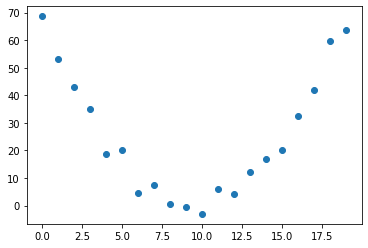
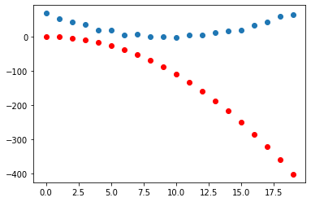
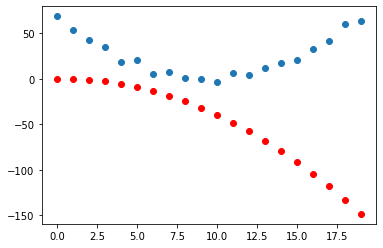
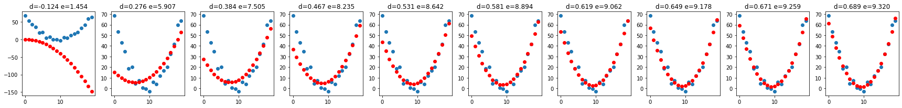

from fastai.imports import *
from fastai.torch_imports import *
from fastai.torch_core import *Motivation
Someone walks up to you and hands over a simple data set of x and y coordinates. You eyeball it and think, “hmm seems like we can fit a quadratic function to this”. This post walks through how this can be done using gradient descent (and follows the treatment in Chapter 4 of [1]).
num_points = 20
x = torch.arange(0,num_points).float()
xtensor([ 0., 1., 2., 3., 4., 5., 6., 7., 8., 9., 10., 11., 12., 13.,
14., 15., 16., 17., 18., 19.])d = 0.75
e = 9.5
noise = 1 + torch.randn(num_points)*3
y = d*(x-e)**2 + noise
y, -2*d*e, d*(e**2)(tensor([68.6996, 53.2421, 43.1072, 35.0240, 18.7474, 20.2123, 4.7285, 7.6421,
0.6463, -0.4163, -3.0223, 5.8641, 4.2702, 12.0058, 16.8083, 20.2149,
32.4927, 41.8890, 59.8105, 63.5625]),
-14.25,
67.6875)Since \(d(x-e)^{2} = d*(x^{2} -2ex + e^{2}) = dx^{2} - 2dex + d*e^{2}\) we expect to see the parameters \(d\), \(-2*d*e\) and \(\approx 1+d*e^{2}\) being uncovered. The last term is because we are adding a \(1\) in the noise.
The data then looks like the following
plt.scatter(x,y)<matplotlib.collections.PathCollection>
Recipe
Initialize the parameters
We need three parameters to describe a quadratic \(ax^{2}+bx +c\)
params = torch.randn(3).requires_grad_()Calculate the predictions
We create a function where we can plug in our input features (\(x\) coordinate values in this case) and get a prediction for the \(y\). The function below will do just that.
def f(x, params):
a,b,c=params
return a*(x**2) + b*x + cThe predictions, yhat, can then be obtained using
yhat = f(x, params)
yhattensor([-1.0763e-01, -9.4094e-01, -4.0345e+00, -9.3884e+00, -1.7002e+01,
-2.6877e+01, -3.9011e+01, -5.3406e+01, -7.0062e+01, -8.8977e+01,
-1.1015e+02, -1.3359e+02, -1.5928e+02, -1.8724e+02, -2.1746e+02,
-2.4994e+02, -2.8467e+02, -3.2167e+02, -3.6093e+02, -4.0245e+02],
grad_fn=<AddBackward0>)Compare predictions to the data
plt.scatter(x, y)
plt.scatter(x, to_np(yhat), color = 'red')<matplotlib.collections.PathCollection>
Calculate the loss
We will use mean squared error for this.
def mse(yhat, y):
return ((yhat-y)**2).mean()loss = mse(yhat, y)
losstensor(44301.6484, grad_fn=<MeanBackward0>)Calculate the gradients
loss.backward()params.gradtensor([-70097.9297, -4488.5391, -324.2715])Take a gradient descent step
Set a learning rate, lr, and then do a step like so
lr = 1e-5
params.data -= lr*params.grad.data
params.grad = NoneGet a new prediction and plot again.
plt.scatter(x, y)
plt.scatter(x, to_np(f(x,params)), color = 'red')<matplotlib.collections.PathCollection>
All together now
Not much changed when we took a single gradient step so we will want to do this for multiple iterations. Before doing that we make a simple function, called step, that will apply all of the ingredients of the recipe.
def step(params, lr=1e-5, prn=True):
yhat = f(x, params)
loss = mse(yhat, y)
loss.backward()
params.data -= lr*params.grad.data
params.grad = None
if prn: print(loss.item(), params)
return yhatAnd then another function that will call the step function as many times as we desire.
def learner(num_iterations, record_interval, lr):
preds_list = []
params_list = []
for i in range(num_iterations):
prn = i % record_interval == 0
preds = step(params, lr, prn)
if prn:
preds_list.append(preds)
params_list.append(params.detach().clone())
return preds_list, params_listWe will run \(1,000,000\) iterations and record results every \(100,000\) iterations. The first item is the loss and the second are the parameters \(a,b\) and \(c\) that define the quadratic we want to uncover/recover.
preds_list, params_list = learner(1000000, 100000, 1e-5)8900.236328125 tensor([-0.1242, 0.3612, -0.1029], requires_grad=True)
382.91522216796875 tensor([ 0.2762, -3.2625, 15.3551], requires_grad=True)
231.8618621826172 tensor([ 0.3839, -5.7625, 27.3517], requires_grad=True)
141.83514404296875 tensor([ 0.4671, -7.6927, 36.6108], requires_grad=True)
88.12383270263672 tensor([ 0.5312, -9.1819, 43.7649], requires_grad=True)
56.144981384277344 tensor([ 0.5809, -10.3335, 49.2795], requires_grad=True)
37.080955505371094 tensor([ 0.6190, -11.2180, 53.5353], requires_grad=True)
25.659448623657227 tensor([ 0.6487, -11.9067, 56.8358], requires_grad=True)
18.909128189086914 tensor([ 0.6714, -12.4334, 59.3597], requires_grad=True)
14.805198669433594 tensor([ 0.6891, -12.8450, 61.3470], requires_grad=True)Next we plot what our best estimate of the quadratic function looked like at every \(100,000\) iterations.
num_preds = len(preds_list)
_, axs = plt.subplots(1, num_preds, figsize=(24,3))
for j in range(num_preds):
a,b,c = params_list[j]
dhat = a
ehat = -1*b/(2*a)
axs[j].scatter(x, y)
axs[j].scatter(x, to_np(preds_list[j]), color='red')
axs[j].set_title(f'd={dhat:3.3f} e={ehat:3.3f}')
plt.tight_layout()
The captions on each plot provide an estimate of \(d\) and \(e\). At the end of one million iterations we have \(\hat{d} = 0.689\) and \(\hat{e}=9.32\).
Recall that we generated the input data using \(d=0.75\) and \(e=9.5\).
References
[1]
J. Howard and S. Gugger, Deep learning for coders with fastai and PyTorch: AI applications without a PhD, 1st ed. O’Reilly, 2020.